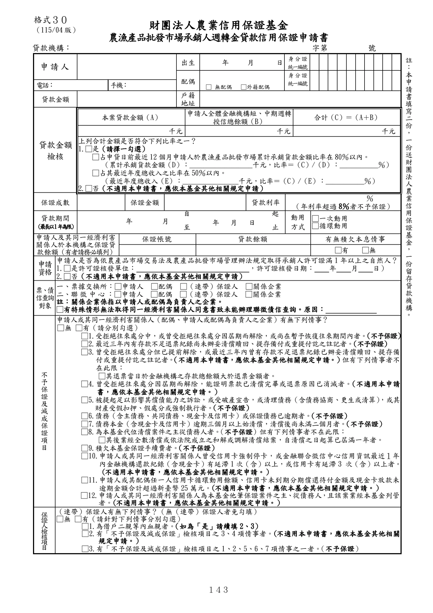

格式 30：農漁產品批發市場承銷人週轉金貸款信用保證申請書
手冊頁：143 PDF頁：155／203

查看PDF文字層
下列文字取自PDF既有文字層，僅供搜尋、複製與無障礙輔助。複雜表格的欄列位置可能失真，正式內容請以原頁預覽或PDF為準。
財團法人農業信用保證基金
農漁產品批發巿場承銷人週轉金貸款信用保證申請書
貸款機構： 字第 號
申請人
出生 年 月 日 身 分 證
統一編號
配偶
□ 無配偶 □外籍配偶
身 分 證
統一編號
電話： 手機：
貸款金額 戶籍
地址
貸款金額
檢核
本案貸款金額（A） 申請人全體金融機構短、中期週轉
授信總餘額（B） 合計（C）＝（A＋B）
千元 千元 千元
上列合計金額是否符合下列比率之一？
1.□是（請擇一勾選）
□占申貸日前最近12個月申請人於農漁產品批發巿場累計承銷貨款金額比率在80％以內。
（累計承銷貨款金額（D）：__________________千元，比率＝（C）/（D）：___________％）
□占其最近年度總收入之比率在50％以內。
（最近年度總收入（E）：________________千元，比率＝（C）/（E）：___________％）
2.□否（不適用本申請書，應依本基金其他相關規定申請）
保證成數 保證金額 貸款利率 ％
（年利率超過 8％者不予保證）
貸款期間
（最長以1年 為 限 ） 年 月
自
年 月 日
起 動用
方式
□一次動用
□循環動用 至 止
申請人及其同一經濟利害
關係人於本機構之保證貸
款餘額（有者請務必填列）
保證帳號 貸款餘額 有無積欠本息情事
□有 □無
申請
資格
申請人是否為依農產品巿場交易法及農產品批發巿場管理辦法規定取得承銷人許可證滿 1 年以上之自然人？
1.□是許可證核發單位： ，許可證核發日期： 年 月 日）
2.□否（不適用本申請書，應依本基金其他相關規定申請）
票、債
信查詢
對象
一、票據交換所：□申請人 □配偶 □（連帶）保證人 □關係企業
二、聯 徵 中 心：□申請人 □配偶 □（連帶）保證人 □關係企業
註：關係企業係指以申請人或配偶為負責人之企業。
□有特殊情形無法取得同一經濟利害關係人同意書致未能辦理聯徵債信查詢。原因：
不
予
保
證
及
減
成
保
證
項
目
申請人或其同一經濟利害關係人（配偶、申請人或配偶為負責人之企業）有無下列情事？
□無 □有（請分別勾選）
□1.受拒絕往來處分中，或曾受拒絕往來處分因屆期而解除，或尚在暫予恢復往來期間內者。（不予保證）
□2.最近三年內有存款不足退票紀錄尚未辦妥清償贖回、提存備付或重提付訖之註記者。（不予保證）
□3.曾受拒絕往來處分但已提前解除，或最近三年內曾有存款不足退票紀錄已辦妥清償贖回、提存備
付或重提付訖之註記者。（不適用本申請書，應依本基金其他相關規定申請。）但有下列情事者不
在此限：
□其退票當日於金融機構之存款總餘額大於退票金額者。
□4.曾受拒絕往來處分因屆期而解除，能證明票款已清償完畢或退票原因已消滅者。（不適用本申請
書，應依本基金其他相關規定申請。）
□5.被提起足以影響其償債能力之訴訟，或受破產宣告，或清理債務（含債務協商、更生或清算） ，或其
財產受假扣押、假處分或強制執行者。（不予保證）
□6.債務（含主債務、共同債務、現金卡及信用卡）或保證債務已逾期者。（不予保證）
□7.債務本金（含現金卡及信用卡）逾期三個月以上始清償，清償後尚未滿二個月者。（不予保證）
□8.為本基金代位清償案件之主從債務人者。 （不予保證）但有下列情事者不在此限：
□其後業經全數清償或依法院成立之和解或調解清償結案，自清償之日起算已屆滿一年者。
□9.積欠本基金保證手續費者。（不予保證）
□10.申請人或其同一經濟利害關係人曾受信用卡強制停卡，或金融聯合徵信中心信用資訊最近１年
內金融機構還款紀錄（含現金卡）有延滯1次（含）以上，或信用卡有延滯 3 次（含）以上者。
（不適用本申請書，應依本基金其他相關規定申請。）
□11.申請人或其配偶任一人信用卡循環動用餘額、信用卡未到期分期償還待付金額及現金卡放款未
逾期金額合計超過新臺幣 25 萬元。（不適用本申請書，應依本基金其他相關規定申請。）
□12.申請人或其同一經濟利害關係人為本基金他筆保證案件之主、從債務人，且該案業經本基金列管
者。（不適用本申請書，應依本基金其他相關規定申請。）
保證人檢核項目
（連帶）保證人有無下列情事？（無（連帶）保證人者免勾填）
□無 □有（請針對下列情事分別勾選）
□1.為借戶二親等內血親者。（如為「是」請續填 2、3）
□2.有「不予保證及減成保證」檢核項目之 3、4項情事者。（不適用本申請書，應依本基金其他相關
規定申請。）
□3.有「不予保證及減成保證」檢核項目之 1、2、5、6、7項情事之一者。（不予保證）
格式３０
（115/04版）
註
：
本
申
請
書
填
寫
二
份
，
一
份
送
財
團
法
人
農
業
信
用
保
證
基
金
，
一
份
留
存
貸
款
機
構
。